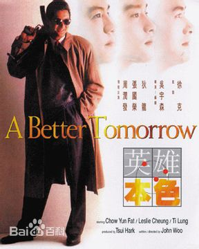
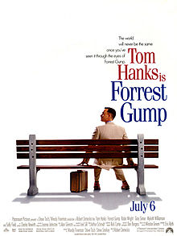

My Favourite Movies
英雄本色
《英雄本色》是新艺城影业有限公司投资拍摄的一部枪战电影，由吴宇森执导，狄龙、张国荣、周润发主演。该片讲述了宋子豪、Mark、宋子杰三人之间的江湖情以及三个主人公各自的挫折、失败、忏悔和报复。影片1986年8月2日在香港上映，是当年香港电影票房冠军。1987年，该片在第6届香港电影金像奖颁奖礼上获得最佳影片、最佳男主角等奖项宋子豪（狄龙饰）与Mark（周润发饰）是一个国际伪钞集团之重要人物，也是情如手足的挚友。宋子豪之弟宋子杰（张国荣饰）刚刚考入警官学校，其女友钟柔（朱宝意饰）聪明敏慧，对子杰情深一片。一次，宋子豪带手下谭成去台北与当地黑帮作伪钞交易。不料谭成早已勾结台北黑帮，出卖子豪。在一场枪战中宋子豪受伤，被闻讯而来的警察捕获入狱。Mark得知宋子豪被捕，孤身一人赴台北击毙黑帮头目，自己也身负重伤，艰难地逃离现场。与此同时，台湾黑帮唯恐子豪在狱中向警方泄密，派人至香港绑架子豪之父，混战中老父丧命。宋子豪的弟弟子杰得知兄长原为伪钞集团头目，老父为之而死，遂对子豪及黑社会恨之入骨，决心除暴安良。三年后，宋子豪出狱回到香港，决心弃暗投明，但得不到宋子杰的谅解。当年出卖宋子豪的谭成现已成为老大。他假惺惺地要求宋子豪合作，遭到拒绝，便设计加害宋子杰。宋子豪忍无可忍，联合Mark盗取谭成制造伪钞的电脑软盘，随即交给宋子杰。但同时佯称以软盘与谭成做交易，计划在交易时活捉谭成。岂料谭成早有准备，双方在码头展开枪战。这时，宋子杰也驾车赶来，激战中Mark不幸身亡。警察蜂拥而至，包围了码头。为了不连累宋子杰，宋子豪开枪击毙谭成后，从宋子杰身上取下手铐自缚，向警察自首。两兄弟终于言归于好
- Mark 周润发
- 宋子杰 张国荣
- 宋子豪 狄龙
- 谭成 李子雄
Star Wars

From Lucasfilm comes the first of the Star Wars standalone films, “Rogue One: A Star Wars Story,” an all-new epic adventure. In a time of conflict, a group of unlikely heroes band together on a mission to steal the plans to the Death Star, the Empire’s ultimate weapon of destruction. This key event in the Star Wars timeline brings together ordinary people who choose to do extraordinary things, and in doing so, become part of something greater than themselves. In theaters December 2016.
- Director J. J. Abrams
- Harrison Ford
- Mark Hamill
- Carrie Fisher
- Adam Driver
Forrest Gump
Forrest Gump is a 1994 American comedy-drama film based on the 1986 novel of the same name by Winston Groom. The film was directed by Robert Zemeckis and stars Tom Hanks, Robin Wright, Gary Sinise, Mykelti Williamson, and Sally Field. The story depicts several decades in the life of Forrest Gump, a slow-witted but kind-hearted, good-natured and athletically prodigious man from Alabama who witnesses, and in some cases influences, some of the defining events of the latter half of the 20th century in the United States; more specifically, the period between Forrest's birth in 1944 and 1982. The film differs substantially from Winston Groom's novel, including Gump's personality and several events that were depicted.
- Director Robert Zemeckis
- Tom Hanks as Forrest Gump
- Gary Sinise as Lieutenant Dan Taylor
- Mykelti Williamson as Benjamin Buford "Bubba" Blue
- Sally Field as Mrs. Gump
Kung Fu Panda 3

Kung Fu Panda 3 is a 2016 3D American-Chinese[5] computer-animated action comedy martial arts film, produced by DreamWorks Animation, and distributed by 20th Century Fox. It was directed by Jennifer Yuh Nelson and Alessandro Carloni. The film was written by Jonathan Aibel and Glenn Berger, produced by Melissa Cobb, and executive produced by Guillermo del Toro. It is a sequel to the 2011 film Kung Fu Panda 2 and the third installment in the Kung Fu Panda franchise. The film features the voices of Jack Black, Bryan Cranston, Dustin Hoffman, Angelina Jolie, J. K. Simmons, Lucy Liu, Seth Rogen, David Cross, Kate Hudson, James Hong, Randall Duk Kim and Jackie Chan.
- Director Jennifer Yuh Nelson and Alessandro Carloni
- Jack Black as Po
- Bryan Cranston as Li Shan, Po's biological father and the uncle of Dim and Sum
- Dustin Hoffman as Master Shifu
- Angelina Jolie as Master Tigress